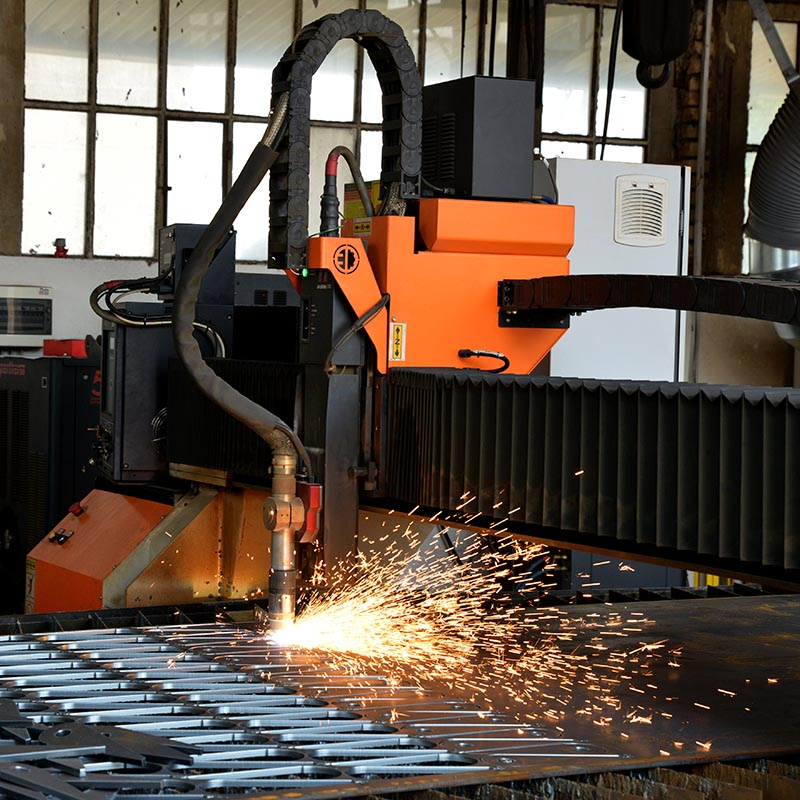

Pocetna
Delatnosti
Proizvodi
Kontakt
Tamni režim
Svetli režim

CNC sečenje limova
Raspoložive mašine: Fiberlaser snage od 3kW; max dimenzije table 3000 x 1500mm CNC plazma 450A dimenzija table 2000x6000mm CNC makaze širine 3100 mm dužine i debljine sečenja do 16mm CNC makaze širine 4100 mm dužine i debljine sečenja do 6mm CNC testere za sečenje profila cevi i punih materijala